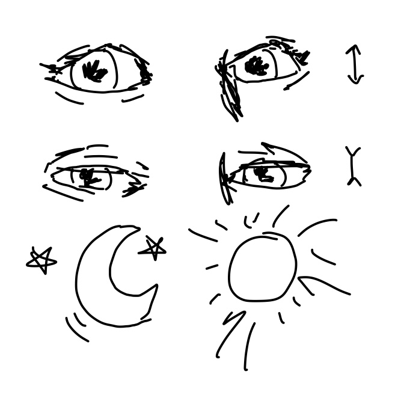

Gesture 1, Current: Paying by tapping phone
The gesture here is using our hands to place two electronic items next to eachother
to pay for something. This is also usually accompanied with a glance down at the phone,
as well as a double click to verify your identity.

Gesture 2, Current: Tapping and swiping on mall navigation
These gestures include pressing buttons, tapping, swiping and then ultimately following the directions
of an interactive map exhibit in shopping centres. This is a good exmaple of an interactive technology that is not our phones
that we use in our lives.
Gesture 3, Current: Using a myki at the train station
This interaction includes the use of public transport, such as trains, trams or buses, and the
technology they have installed at these locations. For exmaple, the electronic gates at train stations
require you to use your hand to place your myki card on the readers at the entry.
Gesture 4, Future: Waving
I think that the concept of more gestural waving with our entire hand is something that should be utilised more
in the future. We indicate movement with our fingers alot currently, however as interactive technologies progress
I think using the whole arm, or at least including the wrist and forarm to indicate direction or movement could be interesting.

Gesture 5, Future: Smiling
Smiling is one of the most beautiful human behaviours, so it would be nice if interactive technology could celebrate this
more. Perhaps something like a triggered camera to capture candid laughing or joyful moments. At the moment smiling is not utilised, and can even
negatively affect technologies, e.g. Face Recognition, but I hope this will evolve.

Gesture 6, Future: Squinting
Squinting can indicate alot about the scenario a person is in, and eye momvement in general is really indicative of the human experience.
Utilising it in the context of being tired, or even just weather patterns could be interesting to connect the individual with the external environment, through technologies.

Gesture 1, Current: Paying by tapping phone
The gesture here is using our hands to place two electronic items next to eachother to pay for something. This is also usually accompanied with a glance down at the phone, as well as a double click to verify your identity.
Gesture 2, Current: Tapping and swiping on mall navigation
These gestures include pressing buttons, tapping, swiping and then ultimately following the directions of an interactive map exhibit in shopping centres. This is a good exmaple of an interactive technology that is not our phones that we use in our lives.
Gesture 3, Current: Using a myki at the train station
This interaction includes the use of public transport, such as trains, trams or buses, and the technology they have installed at these locations. For exmaple, the electronic gates at train stations require you to use your hand to place your myki card on the readers at the entry.
Gesture 4, Future: Waving
I think that the concept of more gestural waving with our entire hand is something that should be utilised more in the future. We indicate movement with our fingers alot currently, however as interactive technologies progress I think using the whole arm, or at least including the wrist and forarm to indicate direction or movement could be interesting.
Gesture 5, Future: Smiling
Smiling is one of the most beautiful human behaviours, so it would be nice if interactive technology could celebrate this more. Perhaps something like a triggered camera to capture candid laughing or joyful moments. At the moment smiling is not utilised, and can even negatively affect technologies, e.g. Face Recognition, but I hope this will evolve.
Gesture 6, Future: Squinting
Squinting can indicate alot about the scenario a person is in, and eye momvement in general is really indicative of the human experience. Utilising it in the context of being tired, or even just weather patterns could be interesting to connect the individual with the external environment, through technologies.